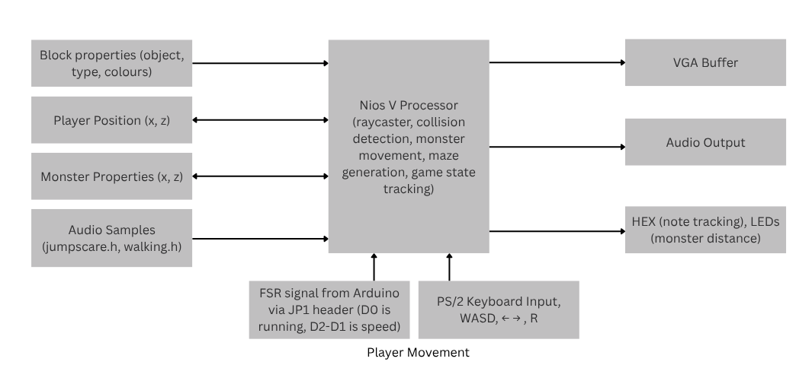

Electrical & Computer Engineering
Run Horror Game
This was a course project for ECE243: Computer Organization at UofT. My teammate and I made a horror game with ray-cast graphics, BFS-based monster movement, and player movement though a force sensing resistor which allowed the player's real-life footsteps to be translated into in-game movement. Since it was a course project, I cannot share the code publicly.
System Block Diagram

Features
At the start of each game, a room-based maze is dynamically generated to create a map.
Six collectible notes are placed throughout the maze, and a monster is spawned that continuously tracks the player using breadth-first search (BFS).
The player can move around in game using a PS/2 keyboard or a force-sensing resistor (FSR) attached to their foot.
If the user repeatedly presses down on the FSR (like when you walk),the player will move in game.
The FSR works by creating a voltage divider circuit with a fixed resistor and a variable resistor. The variable resistor is the FSR, and the fixed resistor is a 10k ohm resistor.
The voltage divider circuit is then connected to the to an analog Arduino pin, which converts the voltage to a digital value and outputs it to a digital pin which the NIOS V can read through its GPIO ports. The ADC converts the voltage to a digital value, which is then used to determine the player's speed.
The VGA display renders a ray-cast view of the maze along with a sprite of LeBron James as the monster. We also used double buffering to prevent screen tears and flickering during gameplay.
To do the ray-casting without the Math library, we used precomputed sine and cosine lookup tables.
Audio output is used for footstep sounds during movement and a jumpscare sound when the player is caught by the monster.
The HEX display shows note collection progress, and the red LEDs indicate how close the monster is to the player.
The objective is to navigate the maze and collect six notes to escape before the monster finds the player.
The VGA, PS/2 keyboard, audio CODEC, and FSR are all interfaced using memory-mapped I/O.